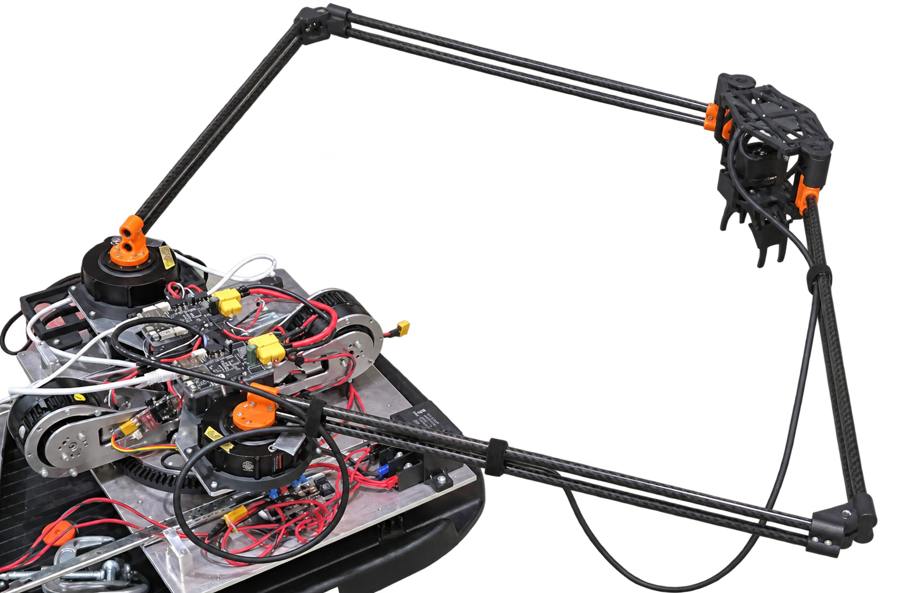

IBUKI’S BLOG / ROBOTICS & CURIOSITY
つくる。ためす。
夢中になる。
ロボットづくりと、日々の好奇心。

写真は原記事でご覧いただけますFEATURED PROJECT / 2026キャチロボ2026サメサメ工業
詳しく見る SELECTED WORKS
アイデアを、かたちに。

STAY CURIOUS. KEEP MAKING.
IBUKI’S BLOG / ROBOTICS & CURIOSITY
ロボットづくりと、日々の好奇心。

写真は原記事でご覧いただけますSELECTED WORKS
STAY CURIOUS. KEEP MAKING.